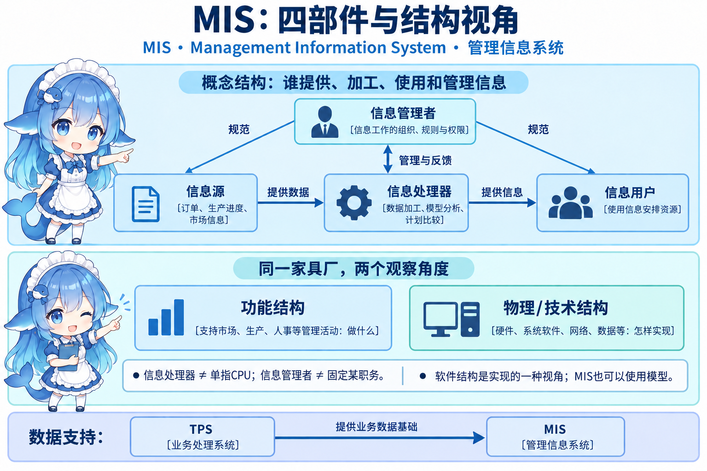
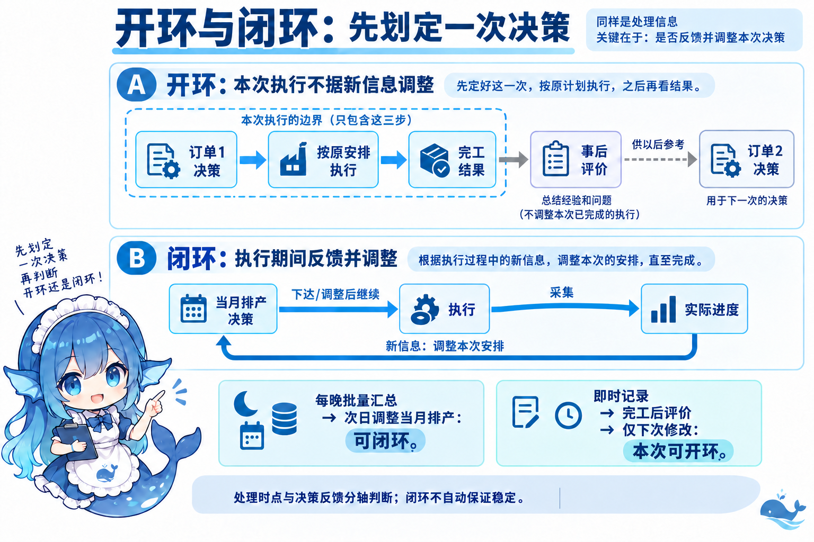
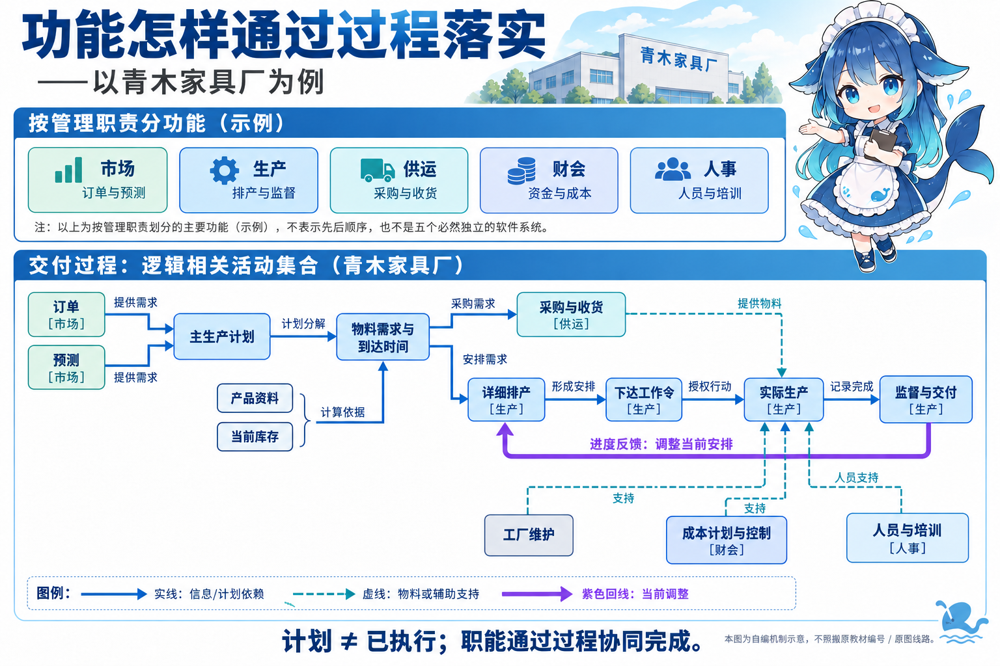
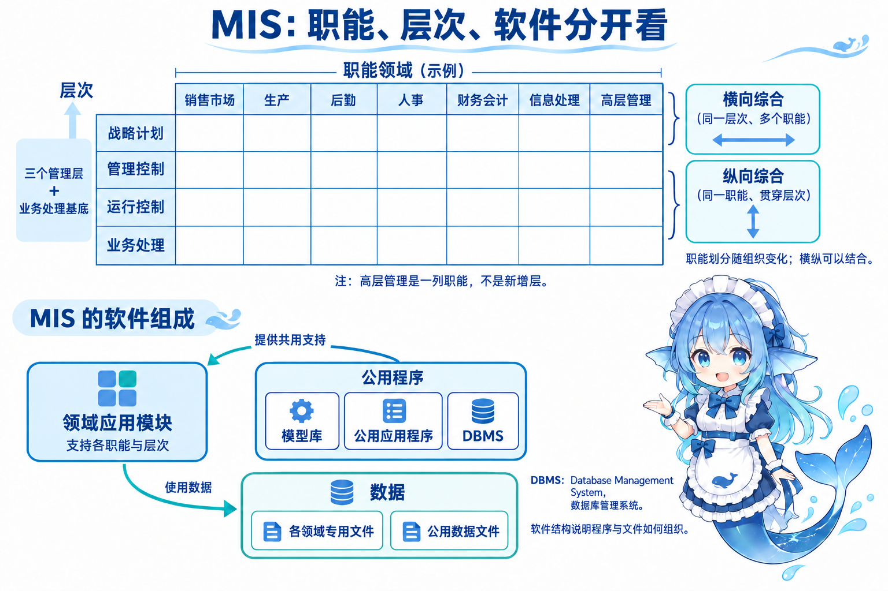
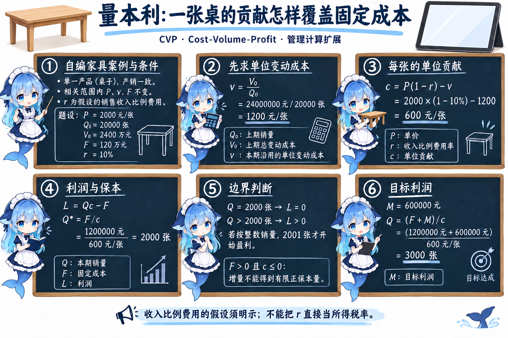
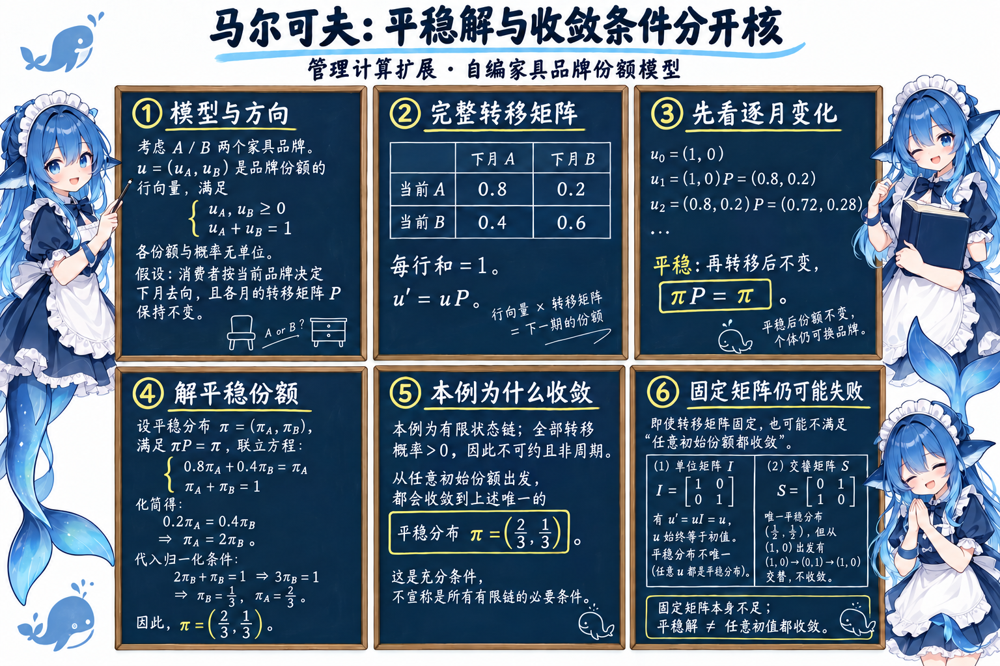

青木家具厂的 TPS 已经记录订单、领料和完工事实。生产主管接着问：这批桌子落后多少，剩余安排要不要改？财务又问：本期至少卖多少才能覆盖固定成本？数据开始服务于计划、比较与管理判断。MIS（Management Information System，管理信息系统）在业务处理基础上引入管理方法，支持分析、预测、计划、控制和辅助决策。它是人机系统，可以使用模型；软件里出现模型，不能单凭这一点就改判为 DSS。
MIS 将企业信息与管理方法集成，支持更广的数据共享。教材对早期 MIS 的历史概括还包括职能明确、体系较稳定、处理技术成熟；这些是当时系统形态的描述，不宜作为所有现代 MIS 的强制特征。本节沿同一家具厂分开观察信息职责、决策反馈、业务功能和软件支撑。教材正式小小节是 3.3.1“概念”、3.3.2“功能”、3.3.3“组成”。后面的量本利与马尔可夫计算来自关联练习，明确列为扩展。
3.3.1 管理信息系统概念：四部件各管什么
信息源提供订单、产量、供应商和市场等内外数据。信息处理器将数据加工为可用信息，例如汇总完工数、比较计划、用模型估算需求。信息用户使用结果安排资源；信息管理者组织信息工作，协调规则、口径与使用。四部件描述概念职责：信息处理器不单指 CPU，信息管理者也不固定等同总经理。一位经理可以兼任信息管理职责，同一信息源也可以同时是其他信息的用户。




功能与物理结构：同一个系统，问题不同
“市场子系统、生产子系统”回答支持哪些管理职责，属于功能结构。“硬件、操作系统、网络、数据库管理软件与数据资源如何组织”回答怎样实现，属于物理/技术实现视角。物理结构并不只含硬件，功能结构也不等于屏幕上有几个按钮。第 3.3.3 的软件结构只观察程序和文件组织，不能拿它代替整个物理结构的全部要素。
换一个条件：采购主管把“库存成本实际与计划比较”列入需求，这是管理功能；开发者把该计算放到服务器、选择 DBMS，并安排模块访问数据，这是实现安排。两者可以对应，名称和分类轴仍须分清。
开环与闭环：先圈定本次决策
以一张订单的排产决策为界。执行期间按原安排走完，不根据新情况改变本次决策；完工后评价，只供以后决策参考，这是教材的开环机制。若在执行期间持续收集实际进度，送回决策者并调整当前安排，则是闭环。开环仍有事后评价；“完全没有任何反馈”会把下次参考和内部数据加工往返也错误排除。


教材先把实时与闭环、批处理与开环作概括，紧接着说明较长决策中的批处理也能构成闭环。应用时保留这个例外：一个月排产每天夜里汇总，次日调整剩余安排，处理虽然成批，管理过程仍有当前反馈。反过来，进度看板即时刷新，规程却只在订单结束后评价、下次才改；更新速度不足以证明本次闭环。反馈用途与处理时点应分轴判断。


层次和职能交叉，纵横综合各沿哪一轴
战略计划、管理控制、运行控制是三个管理层；加上业务处理基底，教材金字塔与矩阵有四行。下层通常处理更多细粒度数据，上层汇总程度更高，图形面积不表示重要性或精确比例。每个职能可以贯穿层次：生产有完工记录，也有每日偏差、月度成本比较和自动化方向选择。
横向综合按层整合：同一管理控制层把销售、生产、采购资金一起比较。纵向综合按职能贯通：把人事的考勤、日常安排、费用比较和长期用工规划结合。纵横综合同时跨两轴。判断时把“同一层跨职能”与“同一职能跨层”说出来，比记图朝哪边画更可靠。
3.3.2 管理信息系统的功能：职能通过过程完成
教材五个职能子系统示例是市场、财会、人事、生产、供运。名称都是管理业务职责；后面的七领域是另一种展开，职能分法随组织变化。五个框不表示五步执行，也不要求采购、仓储和人事各部署一套独立软件。
过程是逻辑相关活动的集合。订单交付可以跨市场、采购、生产、财会：教材主生产计划的依据包含指令性计划、订货服务和预测；产品资料、库存与需求决定原料、半成品、外购件及资金需求，也决定物料到达时间和库存水平。采购安排订货，库房安排何时何地接收；详细排产决定车间何时做什么；下达工作令落实安排；生产监督收集实际完成信息并调整。维护安排大修，成本计划与控制支持运行。下面自编图选订单与预测作为本厂计划输入，不穷尽所有来源。


计划列出“今天生产 100 张”，只能说明安排；实际产量还要靠完工信息确认。系统算完排程，也不能据此把 100 张全部记为已交付。生产完成后还需包装并运出。把计划、下令、执行与监督拆开，才能看见业务过程怎样落实职责。


教材图 3-8 有一处需要辨清的编号
原图标“8 工厂监督”“11 库房安排”；正文先用 11 说明收货安排，随后又用 11 说明监视完成和调整。此处图文职责不一致，疑似编号笔误，尚未核到出版社正式勘误。这里按“库房收货安排”和“工厂监督调整”讲功能，不要求记错位编号。原 Markdown 的辅助图注对部分线路也有概括偏差，应以职责、实际图和明确正文分别核对。
3.3.3 管理信息系统的组成：职能矩阵与软件结构
教材功能/层次矩阵七列为销售市场、生产、后勤、人事、财务会计、信息处理、高层管理；四行是前述三管理层与业务处理基底。交点表示某种职能在某层的任务，不规定 28 套独立系统。“高层管理”是一列服务领域，“战略计划”是一行活动层次；高层管理领域也有会议、查询和指令等日常任务。


七个领域怎样贯穿层次
下面把教材职责换成家具厂例子，帮助读取矩阵；表格内案例为自编说明，未把原图空格补写成作者的原有内容。
| 职能领域 | 业务与运行控制 | 管理控制与战略计划 |
|---|---|---|
| 销售市场 | 记录销售，安排与培训销售人员；按区域、产品、客户分析销量。 | 成果与市场计划比较；研究客户与竞争者，选择新市场。 |
| 生产 | 产品/设备设计安排、质量检查；订货、成品、废品、工时记录；比较实际进度。 | 比较总进度、单位成本和工时消耗；选择加工与自动化方向。 |
| 后勤 | 采购、收货、库存与分发；采购单、收货报告、运输和出入库记录。按当日到货与缺料安排收货、配送，是运行控制例。 | 库存水平、采购成本与计划比较；供应政策、自制或外购、分配方案。 |
| 人事 | 雇用、培训、考核、工资与离职，记录人员、岗位与工时；日常人事变化和安排。 | 人员结构、招募/培训费用、工资与要求比较；长期用工、工资和留任方案。 |
| 财务会计 | 财务保障资金并控制资金成本；会计分类、汇总、报告和预算；处理差错、异常、未处理业务。 | 预算、成本和差错率比较；长期资金保障与会计/预算系统规划。 |
| 信息处理 | 请求处理、数据/程序变更与故障报告；日常任务调度、设备故障、开发和调试进度。 | 资源费用、项目计划与实际比较；集中或分散、总体计划与软硬件总体结构。 |
| 高层管理 | 查询、辅助决策、编写文件与发指令；会议和联系安排。 | 各领域执行计划汇总比较；公司方向和资源计划，综合内外信息。 |
例如，长期“自制还是外购”属于后勤战略问题；每天收货也是后勤职责。财务强调资金保障及成本，会计强调分类、汇总和标准报告，不能将两者用途混写。教材还允许办公自动化与信息处理分开或合并：它支持知识工作与文书工作，如文字处理、电子信件/文件、数据与声音通信。不能凭本矩阵把 OAS 固定画成 MIS 必须包含的一块。
软件结构：应用、共享程序和文件一起支撑
各领域应用模块支持相应层次；公用程序包括模型库、公用应用程序和 DBMS（Database Management System，数据库管理系统）。各领域专用文件与公用数据文件同时存在。DBMS 是管理数据的软件，数据库/文件是数据资源；名称里都有“数据”，对象仍不同。模型库是分析资源，也再次说明 MIS 可以有模型。


公用数据表示支持共享，不能据此断言全员能无条件读所有文件；专用文件也不证明部门信息必须完全隔离。共享范围、接口和权限由具体设计确定。软件结构是理解实现组织的一个视角，功能/层次矩阵是理解管理需求的一个视角。
管理计算扩展一：量本利先把总成本变成单位贡献
CVP（Cost-Volume-Profit，量本利）分析考成本、销量、利润关系，本教材 3.3 正式正文未列这道计算。这里因关联练习命中而补充。以下自编家具例设单一桌产品、产销一致；在覆盖目标销量的相关范围内，单价、单位变动成本、固定成本总额不变。假设销售收入还须付比例费用，明确其计费对象。
单价 P=2000 元/张；上期销量 Q₀=20000 张，上期总变动成本 V₀=2400 万元；本期固定成本 F=120 万元；比例费用 r=10%，按销售收入计算。本期销量为 Q，利润为 L，单位变动成本为 v，单位贡献为 c；目标利润 M=60 万元。Q₀、V₀用来估计每张成本，不能直接把上期总变动成本当本期固定成本。


v = V₀/Q₀ = 24000000 元 / 20000 张 = 1200 元/张
c = P(1−r)−v = 2000×0.9−1200 = 600 元/张
L = Qc−F = 600Q−1200000 元
Q* = F/c = 1200000/(600 元/张) = 2000 张
QM = (F+M)/c = (1200000+600000)/600 = 3000 张
卖 2000 张恰好保本，利润为零；在同样假设下，整数销量至少 2001 张才严格盈利。卖 3000 张回代：收入 600 万元−比例费用 60 万元−变动成本 360 万元−固定成本 120 万元=60 万元。若 F>0 且 c≤0，增加销量无法取得有限正保本量。算出负数销量或分母为零时，应检查条件，不能当正常保本答案。
完整题源还原：2020 下半年 Q70 的电视机保本题
来源转录题设：售价 2500 元/台，去年销售 25000 台，固定成本 250 万元，总可变成本 4000 万元，税率 16%；问年销量保本点。选项 A 5000、B 10000、C 15000、D 20000 台。题干只给“税率”，未说明税种与计税基数；来源解析把它作为销售收入的比例扣减。按这个题库模型：v=40000000/25000=1600 元/台，c=2500×0.84−1600=500 元/台，Q*=2500000/500=5000 台，选 A。5000 台收入扣减后 1050 万元，总成本也是 1050 万元，利润零；超过才盈利。个人记录原答 A，作答正确。
收入比例扣减的公式不能直接替代利润所得税公式，也不表示现实税法。2010 下半年 Q70 无税的软件产品变式给 F=16 万元、v=2 元/套、P=10 元/套；选项 13000、16000、18000、20000 套，160000/(10−2)=20000 套，来源 D。它没有电视机题的税项，不应照搬。
管理计算扩展二：平稳份额与收敛分别证明
马尔可夫链（Markov Chain）按当前状态确定下一步转移的概率。自编品牌 A/B 份额模型取行向量 u=(uA,uB)，两分量非负、和为 1，份额与转移概率均无单位。假设各月使用同一个 P；行是当前品牌，列是下月品牌。
| 当前 → 下月 | A | B |
|---|---|---|
| A | 0.8 | 0.2 |
| B | 0.4 | 0.6 |
每行和为 1。下一月 u′=uP；从 u₀=(1,0) 开始，u₁=(0.8,0.2)，u₂=(0.8×0.8+0.2×0.4，0.8×0.2+0.2×0.6)=(0.72,0.28)。两步后的值还不是长期份额，短期计算需要初值。


平稳分布 π 满足 πP=π，且 πA+πB=1。
0.8πA+0.4πB=πA
⇒ 0.2πA=0.4πB ⇒ πA=2πB
⇒ π=(2/3,1/3)。
代回：第一项 8/15+2/15=2/3，第二项 2/15+3/15=1/3。
本例 P 每项为正，链有限、不可约、非周期，因此有唯一平稳分布，任意初始份额都收敛于它。这是一组充分条件，不能宣称是所有有限链收敛的必要条件。也可直接复算 A 的份额：xn+1=0.8xn+0.4(1−xn)=0.4+0.4xn，于是 xn=2/3+0.4n(x₀−2/3)。随 n 增大，初始差异项趋于零。
固定矩阵本身不足。单位阵 I=[[1,0],[0,1]] 使 u 始终保留初值，有多个平稳分布。交换阵 S=[[0,1],[1,0]] 有唯一平稳分布 (1/2,1/2)，但从 (1,0) 出发在 (1,0) 与 (0,1) 交替，分布不收敛。有平稳、平稳唯一、任意初值收敛必须分别判断。
若把两状态矩阵写成 [[1−a,a],[b,1−b]]，0≤a,b≤1，a 是 A→B，b 是 B→A。a+b>0 时解得 π=(b/(a+b),a/(a+b))；这个快捷式只求平稳解，收敛条件另核。设 s=a+b，A 的份额满足 xn+1=b+(1−s)xn；s>0 时 xn=b/s+(x₀−b/s)(1−s)n，所以 0<s<2 时所有初值收敛。a=b=0 时分母为零、各初值不变；a=b=1 时虽解出一半一半，仍有交替反例。
一个含 0 但统一收敛的自编例：a=0、b=0.4，P=[[1,0],[0.4,0.6]]。A 进入后不离开，B 份额每步乘 0.6，所有初值趋于 (1,0)。它可约，说明不可约并非一般收敛的必要条件。现实客户转移概率可能变化，模型结果不能当永久市场承诺。
完整题源还原：2009 下半年 Q70 的冰箱品牌题
题源按行份额向量 u 描述 n 品牌，下一时间步 uP，再下一步 uP²。A/B 冰箱月转移矩阵与上表一致，两行依次 (0.8,0.2)、(0.4,0.6)，问最终稳定份额。选项 A (1/4,3/4)、B (1/3,2/3)、C (1/2,1/2)、D (2/3,1/3)。本例满足全正条件，结果 D。关键是按当前份额加权再转移，并用归一化和平稳方程计算。来源概括“固定矩阵就最终稳定”的说法需要上述条件，不能无条件推广。
回到家具厂：先说明信息用于哪一次管理
订单流水为 MIS 提供数据基础；管理者把数据用于计划与偏差比较，再决定当前是否调整。职能列说明管理哪类业务，层次行说明处理哪类管理问题，软件结构说明以什么程序和文件支撑。反馈、组成、过程与技术实现分别有自己的分类条件。
CVP 与马尔可夫是明确的管理计算扩展。旧记录中还出现文档、逆向工程和智能制造标签：文档与逆向工程以第 5 章为主，可读第五章复习册；智能制造及企业应用系统可回看3.1 的企业应用信息化系统。题库分组名称不能覆盖教材归属，归属按实际考点确定。